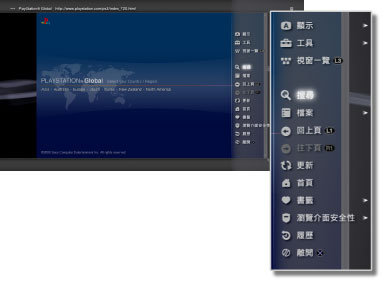

網路 > 網路瀏覽介面之基本操作
網路瀏覽介面之基本操作
如何觀看畫面

(1) |
網頁標題 |
|---|---|
(2) |
網頁位址 |
(3) |
SSL圖示 |
(4) |
忙碌圖示 |
(5) |
瀏覽介面安全性圖示 |
(6) |
超連結位址 |
(7) |
指標 |
如何捲動
| 方向按鈕 | 讓指標移往方向按鈕之按下方向的超連結並開始捲動。 |
|---|---|
 按鈕＋方向按鈕 按鈕＋方向按鈕 |
捲動網頁。 |
| 右操作桿 | 朝希望的方向捲動。 |
使用選單
按下 按鈕，可開啟選單並進行各種操作或設定。反覆按下按鈕，可交互選擇顯示／隱藏。選單項目會因選擇瀏覽模式或視窗模式而異。
按鈕，可開啟選單並進行各種操作或設定。反覆按下按鈕，可交互選擇顯示／隱藏。選單項目會因選擇瀏覽模式或視窗模式而異。

輸入網址(URL)
按下START（開始）按鈕，可開啟鍵盤並輸入網址。輸入網址後選擇  ，即可關閉鍵盤並開啟已輸入網址的網頁。
，即可關閉鍵盤並開啟已輸入網址的網頁。
複製文字
可複製網頁內的文字。
1. |
使用左操作桿，移動指標至想要複製的文字，再按下 |
|---|---|
2. |
按住 |
3. |
在想要複製之文字的最後部份放開 |
4. |
在顯示的選單中選擇［複製］。 |
提示
- 顯示螢幕鍵盤時，可貼上已複製的文字。
- 若在程序4選擇［搜尋］，即能以已複製的文字為關鍵字，進行網路搜尋。
列印網頁
若要使用此機能，需先進入 （設定）＞
（設定）＞ （設定印表機）＞[選擇印表機]設定印表機。
（設定印表機）＞[選擇印表機]設定印表機。
1. |
顯示希望列印的網頁，再按下 |
|---|---|
2. |
選擇[檔案] ＞[列印目前畫面]。 |
3. |
確認列印的設定。 |
4. |
選擇[列印]。 |
提示
可使用之印表機種類會因國家或區域而異。詳細請參閱各區域的官方網站。
開啟更多視窗
可同時開啟多數視窗。將指標移往超連結並按住 按鈕，即可開啟新視窗顯示超連結下的網頁。
按鈕，即可開啟新視窗顯示超連結下的網頁。